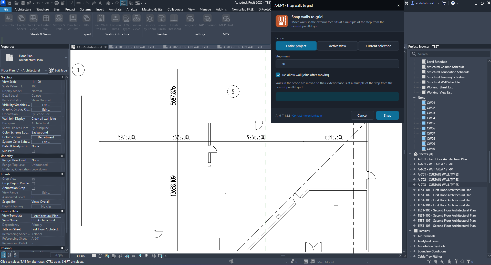
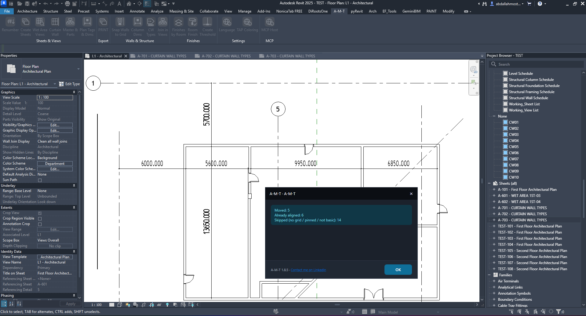

Snap Walls to Grid
Move eligible walls so their exterior faces align to a selected distance step from the nearest parallel Revit grid. Choose where to run the command, set the step in millimeters, and review the movement report.
How the command works
Choose the walls to process, define the alignment interval, then review what was moved or skipped.
1. Choose the processing scope
The Scope buttons determine which part of the model is checked for eligible walls.
Entire project, Active view, or Current selection
Entire project checks walls across the project. Active view limits the operation to walls in the currently open view. Current selection processes only the walls selected before launching the command.
The screenshot shows Entire project selected. Choose the narrowest scope that matches the task you want to perform.

2. Set the alignment step
Define the distance interval used to position each eligible wall relative to its nearest parallel grid.
Step (mm)
Enter the step distance in millimeters. The example uses 50 mm. The wall exterior face is moved to a multiple of this step measured from the nearest parallel grid.
Re-allow wall joins after moving
When checked, wall joins are re-allowed after the wall has been moved. The option is enabled in the supplied example.
3. Run Snap and read the result
The completion message separates walls that changed position from walls that needed no movement or were not eligible.

Understand the report
The example reports Moved: 5, Already aligned: 6, and Skipped: 14.
Skipped walls are identified by the tool as having no grid / pinned / not basic status. These are not included in the moved count.
Click OK to close the report and return to the Revit view.
| Result | Meaning | Example |
|---|---|---|
| Moved | Walls whose exterior face was repositioned to the specified step. | 5 |
| Already aligned | Walls that already satisfied the alignment condition. | 6 |
| Skipped | Walls excluded because they had no suitable grid, were pinned, or were not basic walls. | 14 |
Watch Snap Walls to Grid in Action
See the command workflow inside Autodesk Revit.
Before you run the command
A quick check to help you get the intended result.
- Open the relevant Revit view or preselect the walls you want to process.
- Choose the correct scope: Entire project, Active view, or Current selection.
- Enter the required Step (mm), such as the 50 mm example shown.
- Enable or disable Re-allow wall joins after moving according to your modeling needs.
- Click Snap and review the Moved, Already aligned, and Skipped counts.